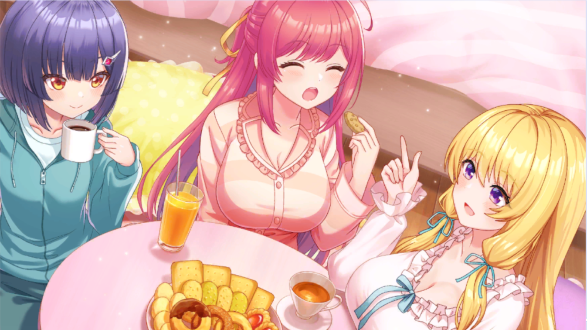

| 角色 | 对话 |
|---|---|
| 菜菜美菜月 | 一、二、三......哇啊啊啊啊！？ |
| 旁白 | 舞蹈练习中。菜月突然在平地上摔倒了。 |
| 花房美波 | 呀！？ |
| 推野惠 | 哇......喂，菜月！ |
| 制作人 | 喂......你没事吧？ |
| 旁白 | 菜月滚倒时把 Primary Colors 成员都卷了进去。 所幸没人受伤，她露出尴尬的笑容。 |
| 菜菜美菜月 | 啊哈哈......我没事啦。大家也对不起哦～？ |
| 花房美波 | 来，菜月酱。抓住我的手。 |
| 推野惠 | 真是的......你得小心点啊？ |
| 制作人 | 今天的菜月感觉心不在焉，或者说注意力不太集中。 怎么了？身体不舒服吗？ |
| 菜菜美菜月 | 才没有啦～？昨天睡得很香， 早饭也好好吃了，应该精力充沛才对啊。 |
| 制作人 | 唔嗯，是吗...... |
| 花房美波 | 这可能是......那个原因吧。 |
| 推野惠 | 是啊。毕竟大型活动刚结束不久。 |
| 菜菜美菜月 | 确、确实可能是那个原因...... 完全没注意到！ |
| 制作人 | ...那个？ |
| 推野惠 | 啊，抱歉。 呃，这个有点难解释...... |
| 推野惠 | 菜月从小就是这样，情绪容易起伏不定...... |
| 菜菜美菜月 | 诶嘿！我就是情绪多变！ |
| 旁白 | （......虽然我不觉得这是值得挺胸自豪的事） |
| 花房美波 | 大型活动后经常会出现这种情况呢...... |
| 花房美波 | 一成不变的日常生活持续太久，注意力就会下降。 |
| 菜菜美菜月 | 嘿嘿。不知道为什么，但就是会变成这样啦～ |
| 制作人 | ......真是个麻烦的性格啊。有什么解决办法吗？ |
| 菜菜美菜月 | 我也被惠和美波说过， 尝试过各种方法但都不太管用------ |
| 菜菜美菜月 | 但是呢！ 最近找到了一个有效的改善方法！ |
| 制作人 | ......要怎么做？ 我也会尽量帮忙的。 |
| 推野惠 | 痛快地玩一场放松心情。 这样菜月的状态就会改善。 |
| 制作人 | ...这、这样啊。 这个方法简单得让人意外。 |
| 制作人 | 就是说定期转换心情就没问题了吧？ |
| 菜菜美菜月 | 说起来最近都没三个人一起玩呢～ |
| 花房美波 | 偶像活动也越来越忙了...... |
| 推野惠 | 以后得考虑菜月的状态来安排日程才行呢...... |
| 制作人 | 啊，那正好。 |
| 制作人 | 你们三个都有空的日子，一起去放松下心情怎么样？ |
| 菜菜美菜月 | 好耶，好久没三个人一起玩了！ |
| 菜菜美菜月 | 现在就去家庭餐厅开作战会议吧！ |
| 花房美波 | 好～！ |
| 推野惠 | ...等一下。 |
| 菜菜美菜月 | 真是的，怎么了嘛？好不容易大家能一起玩。 |
| 菜菜美菜月 | 必须制定个完美计划！ |
| 推野惠 | 练习还没结束吧？家庭餐厅等结束再去啦～ |
| 花房美波 | 啊，说得对。我居然会犯这种疏忽...... |
| 菜菜美菜月 | 诶～，等不及啦～！ 制作人............今天到此为止不行吗？ |
| 制作人 | 嘛，你的心情我不是不能理解。 |
| 制作人 | 但练习就是练习。 马上就结束了，再坚持一下吧。 |
| 菜菜美菜月 | 切～。 不过要是只剩一点的话就坚持吧！ |
| 菜菜美菜月 | 集中精神完美收工～！ |
| 推野惠 | 那个...那么今天就到这里。 开始反省会吧。 |
| 花房美波 | 好～。 |
| 菜菜美菜月 | 诶～！不是要决定玩什么吗！？ |
| 推野惠 | 那是在反省会之后。 |
| 菜菜美菜月 | 好，我反省！ |
| 菜菜美菜月 | ... |
| 菜菜美菜月 | 反省结束！ |
| 推野惠 | 不行啦......至少得先讨论下次演唱会的事。 MC要说什么都还没定呢...... |
| 菜菜美菜月 | 我想先定休息日的计划嘛～ 不然静不下心来～ |
| 花房美波 | 菜月酱的心已经完全飞向休息日了呢。 |
| 菜菜美菜月 | 因为～太期待了嘛！ 是一整天的休息日诶～？做什么？做什么！？ |
| 花房美波 | 主题乐园怎么样？ 广告说新开了游乐设施哦。 |
| 推野惠 | 真是的，连美波都............ |
| 花房美波 | 呵呵，因为不先谈这个的话， 菜月酱就静不下心嘛？ |
| 推野惠 | 嘛............可能确实是这样。 |
| 菜菜美菜月 | 你看吧！惠其实也很期待对吧？ |
| 推野惠 | .........如果说完全不期待，那是骗人的。 |
| 菜菜美菜月 | 你看～！ 所以惠也想想嘛。 |
| 推野惠 | 那............简单点去唱卡拉OK？ |
| 菜菜美菜月 | 嗯～！听起来不错，但感觉不太对～ |
| 推野惠 | 明明是你问我的... |
| 菜菜美菜月 | 因为偶像活动也在唱歌嘛， 去卡拉OK感觉像在练习一样？ |
| 推野惠 | 确实......那看电影？ |
| 菜菜美菜月 | 看电影啊～ 也不错，但感觉还是不太对。 |
| 推野惠 | 真任性... |
| 菜菜美菜月 | 因为因为！ 在电影院不能聊天嘛！ |
| 花房美波 | 呵呵，大家聊天才是最开心的呢。 |
| 菜菜美菜月 | 对，就是这个！ |
| 花房美波 | 虽然从小就在一起，做过各种事情...... |
| 花房美波 | 但回想快乐时光时， 浮现在脑海的都是那些不经意的对话呢。 |
| 推野惠 | 啊～............好像有点懂了。 |
| 菜菜美菜月 | 好，决定了！ 这次休息日我们要好好聊个够！！ |
| 推野惠 | 真的可以吗？ 闲聊随时都能做吧。 |
| 菜菜美菜月 | 唔嗯............ |
| 菜菜美菜月 | 那就来办睡衣派对！ |
| 菜菜美菜月 | 休息日前夜开始边吃零食边开心聊天， 第二天的行程就随性决定吧～ |
| 花房美波 | 啊，难得的机会，不如穿睡衣拍粉丝福利照？ |
| 推野惠 | 诶？ |
| 菜菜美菜月 | 赞成～！ 三个人的合照最近都没怎么拍！ |
| 推野惠 | 那个......非拍不可吗？ 我没什么可爱的睡衣啊。 |
| 菜菜美菜月 | 嗯，我知道！ 趁这机会买新的就好啦。 |
| 推野惠 | 但是... |
| 花房美波 | 啊，惠酱的表情看起来也不是完全不情愿呢。 |
| 菜菜美菜月 | 是呢～。 |
| 推野惠 | 这、这有什么不好的！ 对可爱睡衣有兴趣也没什么吧......！ |
| 菜菜美菜月 | 那不就好啦。 美波也要带超可爱的睡衣来哦！ |
| 花房美波 | 呵呵，知道啦。 |
| 菜菜美菜月 | 好～，就这么定啦！ 真想快点到休息日啊～。 |
| 旁白 | 时光流逝，休息日前夜------ |
 | |
| 花房美波 | 来嘛，惠酱。别害羞了快出来。 |
| 推野惠 | 呜呜......但是...... |
| 菜菜美菜月 | 好，那么开始啦------ |
| 菜菜美菜月 | Primary Colors睡衣派对！ |
| 花房美波 | 哇～，啪啪啪～！ |
| 推野惠 | ...啪啪啪。 |
| 菜菜美菜月 | 先干杯吧！说到干杯就是这个！ |
| 推野惠 | 不就是果汁嘛...... |
| 菜菜美菜月 | 我们不是一直这样的吗？ |
| 花房美波 | 呵呵，我倒好啦～。 |
| 菜菜美菜月 | 谢谢！那么，干～杯！ |
| 花房美波 | 干杯。 |
| 推野惠 | 干杯。 |
| 菜菜美菜月 | 噗哈～。好了，给粉丝们拍照吧～。 |
| 推野惠 | 开、开始紧张了............ |
| 花房美波 | 拍得不好可以重拍哦。 |
| 推野惠 | 对啊。可以重拍的嘛。 |
| 菜菜美菜月 | 来，大家都看这边。准备好了吗？ 来，比耶！ |
| 旁白 | 菜菜美菜月：啊，感觉不错！这套睡衣果然选对了～。 |
| 推野惠 | 我，没做怪表情吧？ |
| 花房美波 | 呵呵，拍得很棒哦。新睡衣也很适合你。 |
| 推野惠 | ...谢谢。美波的也很可爱呢。 |
| 菜菜美菜月 | 那我上传啦～。 |
| 推野惠 | 等、等等！多拍几张选最好的再上传啊............ |
| 菜菜美菜月 | 诶？已经上传了。 |
| 推野惠 | 为什么偏偏这种时候动作这么快............！ |
| 花房美波 | 嚼嚼............菜月酱偶尔动作快得惊人呢。 |
| 菜菜美菜月 | 美波在吃什么～？我也要吃！ |
| 花房美波 | 巧克力哦。也给菜月酱，啊～。 |
| 菜菜美菜月 | 啊～～～～......啊呜！ |
| 菜菜美菜月 | 这个超好吃！下次一起去买吧！ |
| 花房美波 | 呵呵，是我最近的最爱。有很多种口味哦。 |
| 推野惠 | 之前不是还说演出服紧了，吃这么多没问题吗？ 你们两个。 |
| 菜菜美菜月&花房美波 | ......... |
| 花房美波 | 惠、惠酱好过分！ 吃甜食时禁止提体重！ |
| 菜菜美菜月 | 就是！ 惠是魔鬼，恶魔～！ |
| 推野惠 | 对、对不起......你们这么在意吗？ |
| 花房美波 | 当然在意啊，我们是偶像嘛...... |
| 菜菜美菜月 | 会在意啦。 就像惠在握手会上笑得不自然那样超级在意。 |
| 推野惠 | ......诶？ 为、为什么你知道这个...！？ |
| 花房美波 | 诶？ 你在隐瞒吗？ 握手会前都在镜子前练习笑容............ |
| 推野惠 | 怎么会............明明是想偷偷练习的............ |
| 菜菜美菜月 | 根本不用练习嘛， 自然笑就好啦～？ |
| 花房美波 | 惠酱就算普通笑起来也超级可爱啊。 |
| 推野惠 | 呜呜呜呜...... 停！这个话题到此为止！ |
| 推野惠 | 明天的安排现在也要讨论吧？ 明天玩什么！？ |
| 菜菜美菜月 | 看电影、唱卡拉OK， 最后去主题乐园看夜景！ |
| 花房美波 | 啊，听起来很棒呢～。 |
| 推野惠 | 不行啦，根本不可能... |
| 菜菜美菜月 | 那游戏赢的人决定？ |
| 推野惠 | 可以啊............ 玩什么游戏？ |
| 推野惠 | 游戏机也没有，连扑克牌都没带。 |
| 菜菜美菜月 | "熬夜冠军"游戏！ 顾名思义，最后醒着的人赢！ |
| 菜菜美菜月 | 相反最先睡着的人要接受惩罚游戏！ |
| 推野惠&花房美波 | ......... |
| 花房美波 | 这样好吗？ |
| 推野惠 | 这种时候，通常都是菜月最早睡着吧。 |
| 菜菜美菜月 | 没问题！今天的我与众不同！ 因为是睡衣派对嘛！ |
| 菜菜美菜月 | 只要这颗心还在怦怦跳，我就绝对不会睡着！ |
返回首页 ← 点击返回主页